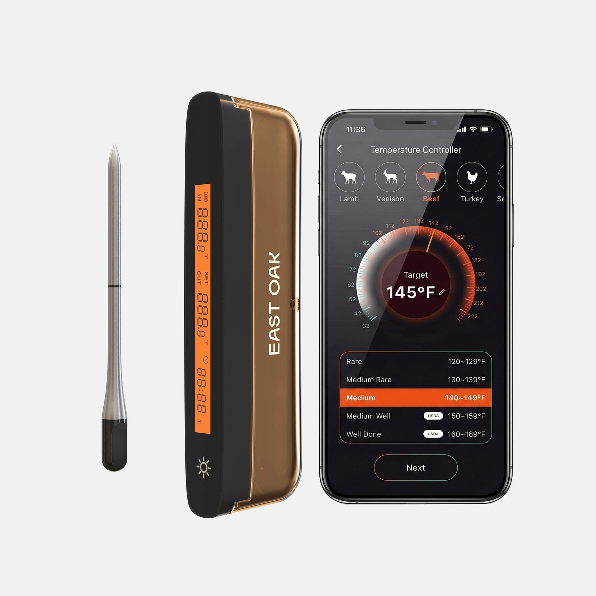
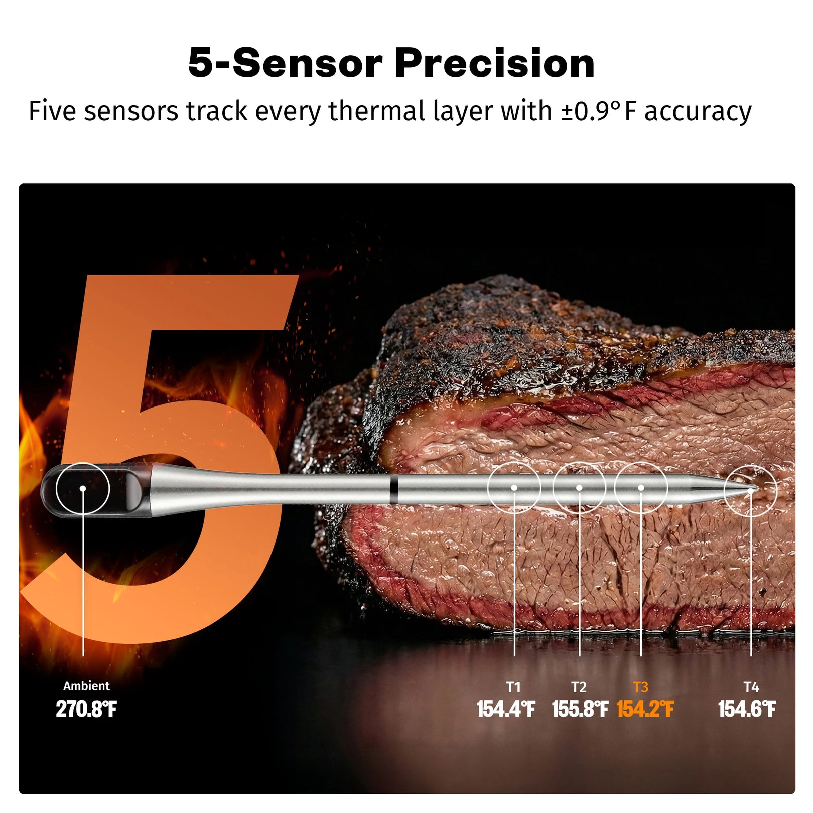
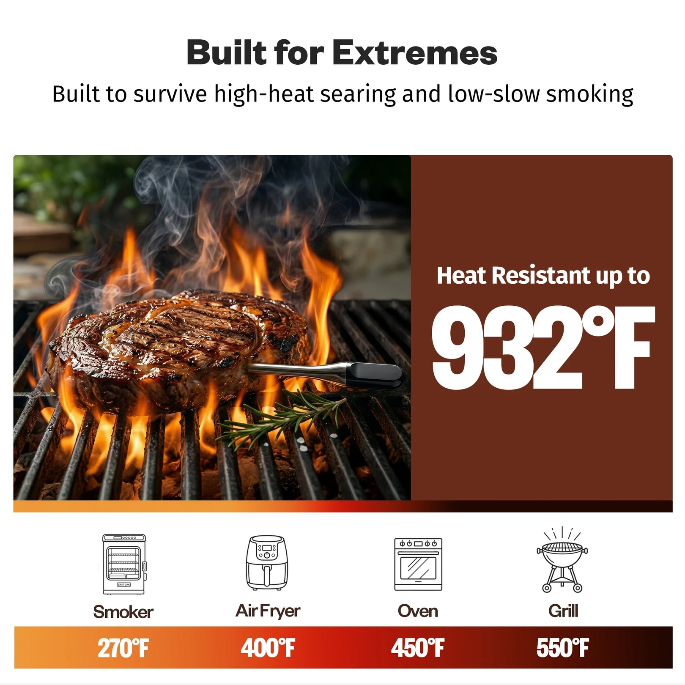
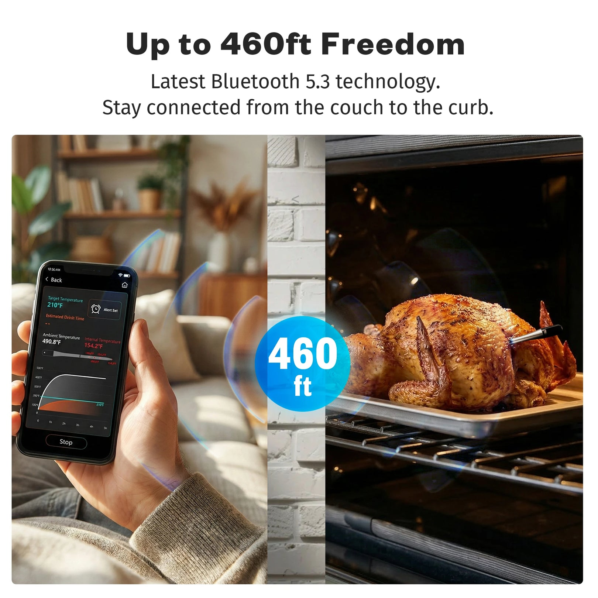
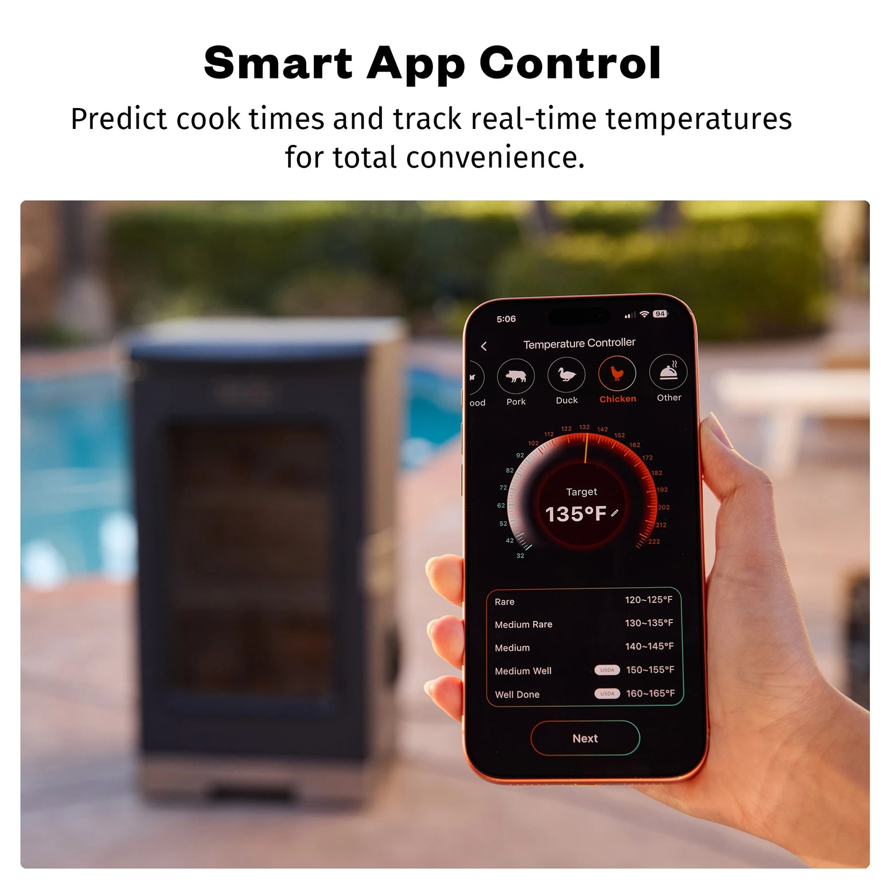
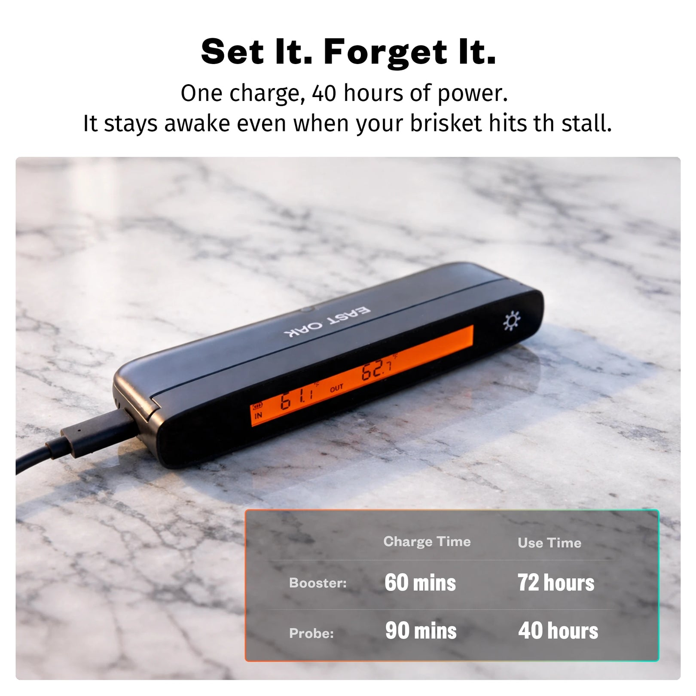

Back to all work
EAST OAK · SMART HARDWARE
Wireless Meat Thermometer
Amazon Listing & A+ Content
Designed Amazon listing visuals and A+ content for EAST OAK’s wireless meat thermometer, using product close-ups, specifications and use cases to explain its features.
My roleVisual Direction · Information Structure · Layout Design
View the live product listing
- SCOPE
- PDP · A+ CONTENT
- ROLE
- Visual direction, information structure and layout design.
- OUTPUT
- 10 product listing visuals and 10 A+ content visuals.
01 · PDP SYSTEM
One image. One clear feature.
Five sensors, heat resistance, Bluetooth connectivity, app monitoring, battery life and waterproof cleaning each get a focused explanation, reducing competing information within a single image.






02 · A+ CONTENT


03 · USAGE STORY
Four steps from setup to serving.
A sequence introduces first-time use: set the target temperature, insert the probe, receive an alert, then rest and enjoy the food.